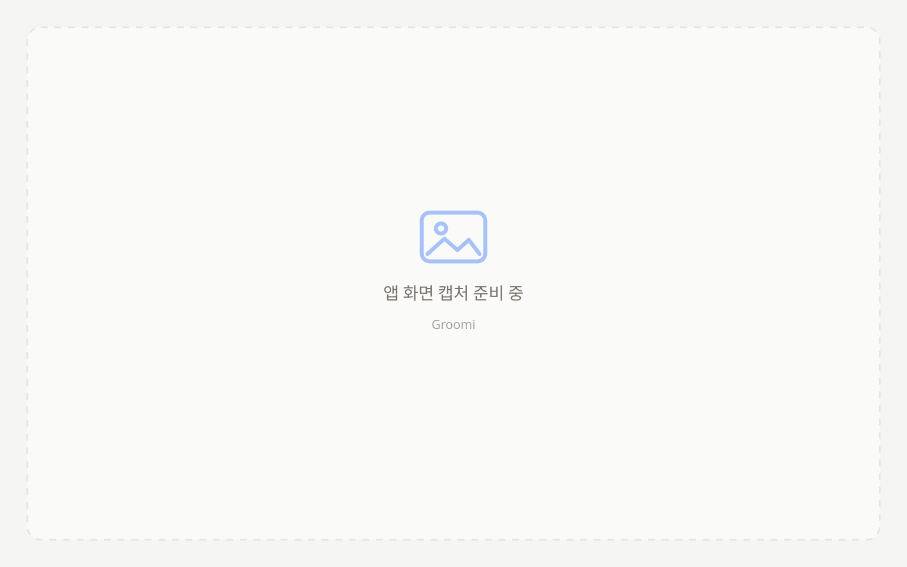

쓰고, 나란히 비교하고
초안과 원고를 분리해서 관리하세요. 분할 보기로 퇴고하고, 자동 저장 상태와 글자 수도 확인할 수 있어요.
초안 / 원고분할 보기자동 저장
원고를 쓰고, 쌓여가는 설정을 정리하고,
공개하기 전 AI 독자의 반응을 들어보세요.
집필의 다음 단계를 함께하는 그루미입니다.
Windows 데스크톱 앱 · 로컬 AI는 Ollama 연결 후 사용

작품을 관리하는 시간은 줄이고, 이야기를 만드는 시간을 늘리세요.
초안과 원고를 분리해서 관리하세요. 분할 보기로 퇴고하고, 자동 저장 상태와 글자 수도 확인할 수 있어요.
회차 정보로 줄거리와 주요 사건을 정리하세요. 인물과 떡밥은 작품 그룹 안에서 이어지고, 해결된 떡밥도 기록으로 남아요.
독서 경험, 관심사, 반응 성향을 선택하세요. 몰입하는 독자부터 개연성을 짚는 독자까지, 다양한 AI 댓글로 원고를 돌아보세요.
원고 작성부터 이야기 정리, 독자 반응까지 이어지는 실제 앱 화면을 준비하고 있어요.
초안과 원고를 나란히 보며 집필하고 퇴고하는 공간.
회차를 넘어 쌓이는 이야기의 기록을 한눈에.
선택한 독자의 시선으로 원고를 돌아보는 시간.
집필은 앱 설치만으로 시작할 수 있어요. AI 기능을 쓰려면 Ollama도 준비해주세요.
릴리즈 페이지에서 groomi-버전.exe를 내려받고 설치하세요. 설치가 끝나면 Groomi를 실행해주세요.
최신 설치 파일 받기Ollama for Windows를 설치한 뒤 PowerShell에서 아래 명령어로 모델을 다운로드하세요. 처음에는 모델 다운로드에 시간이 필요해요.
ollama pull exaone3.5:2.4b
Groomi의 설정 → AI 모델 설정에서 Ollama 실행 상태를 확인하고, 다운로드한 모델을 선택하세요.
위 명령어는 작은 모델로 시작하는 예시예요. PC 성능에 맞는 다른 로컬 모델도 선택할 수 있습니다. EXAONE 모델 목록에서 크기와 모델 정보를 확인하세요. 모델에 따라 한국어 표현과 생성 품질이 달라집니다.
회차 정보를 생성해 줄거리·사건·인물·떡밥을 정리하세요. 결과는 생성 완료 시 저장되며, 보기 버튼으로 열어 수정할 수 있어요.
댓글 컨트롤러에서 독서 경험 · 관심사 · 반응 성향 · 댓글 개수를 선택하고 생성하세요. 작업 중에는 다른 회차를 둘러볼 수 있고, 실패 사유는 작업 기록에서 확인할 수 있어요.
Groomi의 AI 생성은 내 컴퓨터에서 실행 중인 Ollama를 사용합니다. 로컬 모델을 준비한 뒤 원고를 분석하며 외부 클라우드 LLM을 사용하지 않습니다. 앱과 모델을 처음 다운로드할 때는 인터넷 연결이 필요해요.
모델 크기, 원고 길이, 댓글 개수와 PC 성능에 따라 시간이 달라져요. 작은 모델과 적은
댓글 개수로 먼저 확인해보세요. 생성 중 PowerShell에서 ollama ps를
실행하면 PROCESSOR 열에서 CPU / GPU 사용을 확인할 수 있습니다. GPU 지원은 하드웨어와
드라이버에 따라 달라요.
Ollama Windows 안내
Ollama가 실행 중인지 확인하고, PowerShell에서 ollama list로 다운로드한
모델을 확인하세요. 설치 직후 명령어가 인식되지 않으면 새 PowerShell 창을 열어보세요.
이후 Groomi 설정에서 실행 상태와 모델 목록을 다시 확인해주세요.
네. 인물과 떡밥은 그룹 단위로 이어서 관리됩니다. 마지막 회차에 새 정보가 없어도 그룹 상세에서 확인할 수 있어요. 해결된 떡밥도 조회·수정할 수 있지만 댓글 생성은 해당 회차 시점에 미해결인 떡밥만 참고합니다. 이후 회차에서 생긴 정보는 이전 회차의 댓글에 들어가지 않아요.
선택한 작업 폴더에 원고 파일과 로컬 데이터베이스가 저장됩니다. 설정의 작업 폴더 백업 기능으로 백업하고, 저장 문제가 생기면 회차의 이전 저장본 복구 기능을 확인하세요. 백업은 작업 폴더와 별도 위치에 보관하는 것이 좋아요.
첫 문장을 쓰는 순간부터 그루미와 함께하세요.
Groomi 다운로드